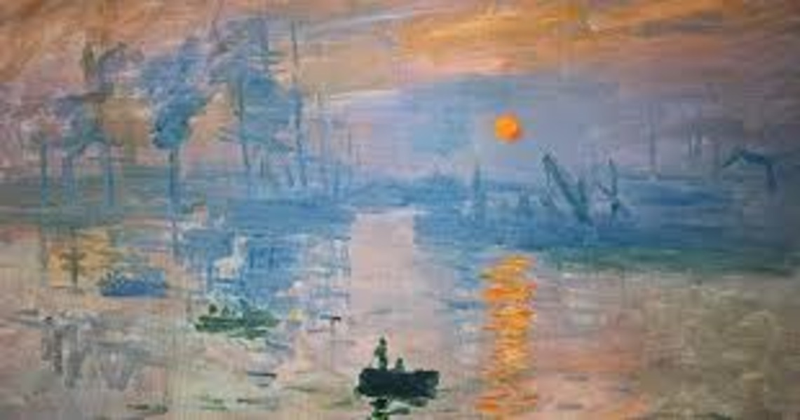

Café Terrace at Night
Paintings
The subject matter of Café Terrace at Night is a yellow cafe with a bright sky strewn with stars, a few people sitting or strolling on the terrace in front of the cafe, and a cobbled street where the houses have yellow lights emitting from their windows.

Starry Night
Paintings
This mid-scale, oil-on-canvas painting is dominated by a moon- and star-filled night sky. It takes up three-quarters of the picture plane and appears turbulent, even agitated.

Water Lilies
Paintings
This vision materialized in the form of some forty large-scale panels, Water Lilies among them, that Monet produced and continuously reworked from 1914 until his death in 1926. At this triptych's center, lilies bloom in a luminous pool of green and blue that is frothed with lavender-tinged reflections of clouds.

Sunrise
Paintings
Subject and interpretation. Impression, Sunrise depicts the port of Le Havre at sunrise, the two small rowboats in the foreground and the red Sun being the focal elements. In the middle..